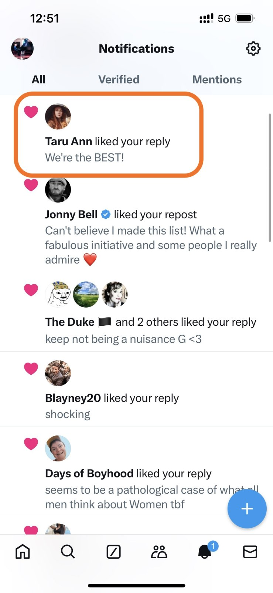
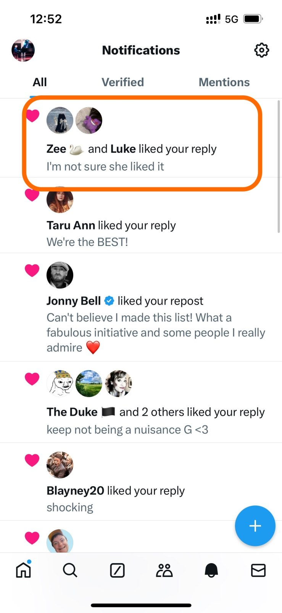
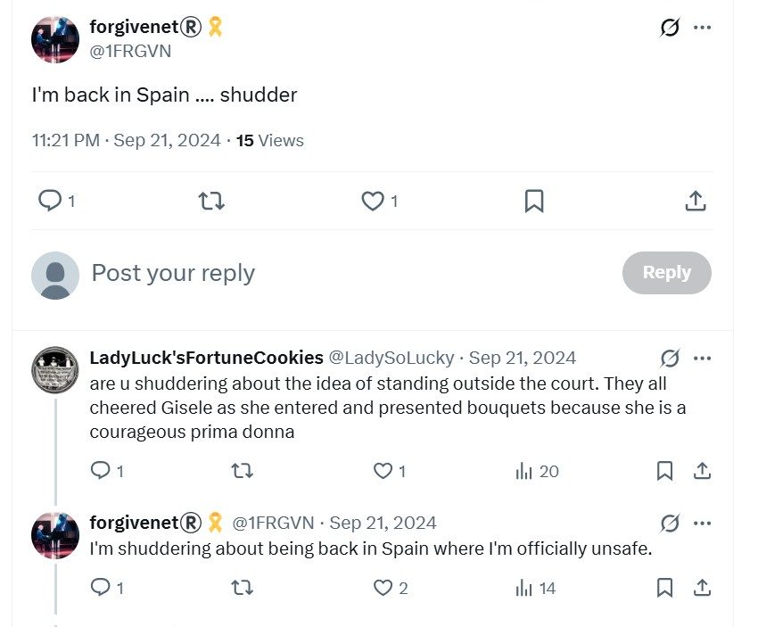
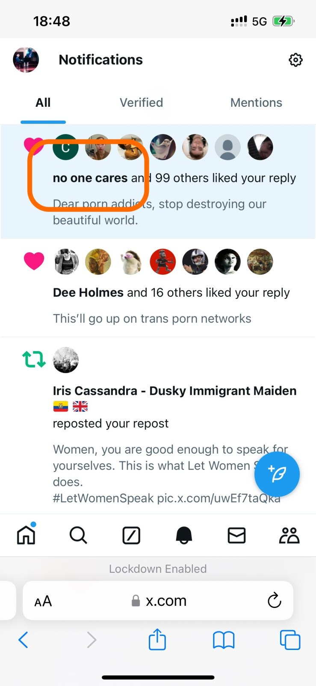
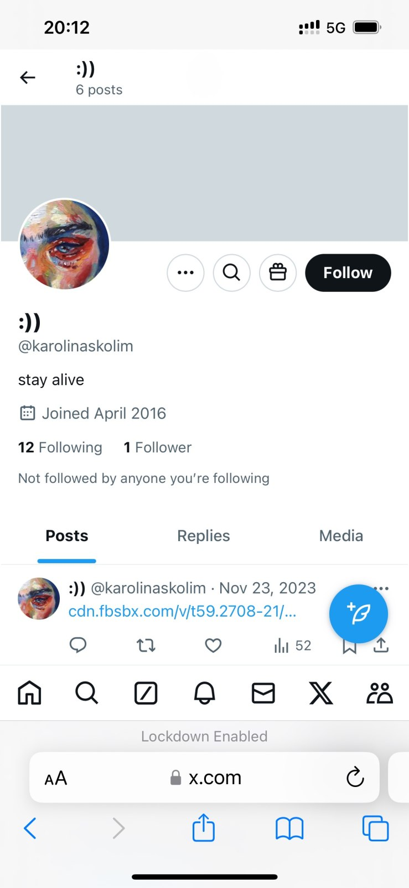

BUT MOST IMPORTANTLY: I lose a screenshot of a man I know very well; my cousin’s partner/boyfriend Chris. He seems to be in a family photo, but I thought his family was my cousin and their sons and these are people I’ve never met before. The photo is of him and what looks like his wife and grown up kids outside their house in the front garden. For over twenty years, this man has been my cousin’s official boyfriend (partner she said for a time). My cousin received a huge Lockerbie compensation payout, far bigger than mine. I often remember him being at her home whenever we had planned I would go over, but I never saw any of his personal stuff in the house. It was always like he was just visiting. Their baby was taken off them immediately. I’m glad about that. Did someone already know what was going on and that children were in peril? Her first son, born in 1999, was abused by dangerous people coming into her home. It seems highly likely the same North London porn-gang targeted other Lockerbie family members. The boyfriend may have taken half-a-million from her, more even, over the last twenty-odd years and could even have been involved in drugging and psychologically terrorizing her in EXACTLY the same way I have experienced in Spain. Her brain is scrambled. Interestingly, my cousin started to stalk me on X around the same time the gangs were panicking about me returning to my piano studies - November 2023 onwards - and she contacted me incessantly during the time I was perma-spiked-high in London. I expect she was following instructions.
@ladysolucky on X - one of my dubious UK general election volunteers - presses me repeatedly to run an X Space describing hacking.
These are my original thoughts
Pedro’s message
25/12/2024, 09:41 - Messages and calls are end-to-end encrypted. Only people in this chat can read, listen to, or share them. Learn more. 25/12/2024, 09:41 - PEDRO is a contact 24/12/2024, 20:14 - PEDRO: VID-20241227-WA0000.mp4 (file attached) 25/12/2024, 11:37 - det sgt lydia cleaves: Hola Pedro 19/02/2025, 17:50 - det sgt lydia cleaves: https://statement-bhw.pages.dev/ 19/02/2025, 17:52 - det sgt lydia cleaves: Recompensas aun en oferta 19/02/2025, 17:53 - det sgt lydia cleaves: Para grabaciones de mi qué Todo el mundo ha visto 19/02/2025, 17:59 - PEDRO: Hola Katerine soy Pedro el antiguo conserje de Villamar, espero que estés bien . 20/02/2025, 15:47 - det sgt lydia cleaves: Si bien aun buscando los videos de yo … pagando hasta 1000 euros para Una copia .. gracias 20/02/2025, 15:48 - PEDRO: Como puedo ayudarte 20/02/2025, 16:44 - det sgt lydia cleaves: Enviame algunas videos qué todo el mundo ha visto para justificar atacandome y te Pago sin problema 20/02/2025, 16:44 - det sgt lydia cleaves: Busco dos tipos de video 20/02/2025, 16:45 - det sgt lydia cleaves: Original cuando yo era pequenya y Tipo spycam de denia 20/02/2025, 16:45 - det sgt lydia cleaves: Gracias 21/02/2025, 18:11 - det sgt lydia cleaves: Email me at info@forgivenet.co.uk with anything 21/02/2025, 18:13 - PEDRO: Que es esto Katerine 21/02/2025, 18:17 - det sgt lydia cleaves: Un email para mi 21/02/2025, 18:22 - PEDRO: Hoy estuve en Villamar visitando a una familia,acabo de llegar a casa 02/03/2025, 06:39 - det sgt lydia cleaves: Is my flat the only one they put poison and drugs in the water ?? Or are there other flats too with women they are targeting?? 06/11/2025, 10:29 - det sgt lydia cleaves: https://fearandloathinginlasmarinas.com/
Novel and documentary theme sketch
Novel documentary themes Summary - Traditional gang stalking of women in Spain, and how everyone knew, and from when - Modern gang stalking, mass voyeurism, close links with porn and sexual violence - Hacking and access to everyone’s networks - Cyber stalking and mobbing by the conservatory, fantastical choreographed events by teachers and staff, when it didn’t work it spread into the town, and townsfolk - Poisoning and drugging, where and when Back story - Who was involved and to what extent - Expat community - Neighbors in the building - The caretaker in the building - Teachers and staff at the conservatory - Kids at the conservatory - National misogynist networks (Madrid) - Townsfolk all - Reporting, GV, police, perito, multiple handwritten letters in desperation to everyone - Honey trapping Back story - Pedophilia, sexualization of children Back story - Damage to me personally: loss of jobs, constant stress and anxiety, racing mind, feeling intense sexual arousal, fear for my life, constant fear in Dénia, actual kidney damage from poisoning - Tecnofix Alicante Padre Marina - Finnish girl and boyfriend in the car with me January 24 breathing in whatever
| Fake accounts and targets |
|---|
| I’m not sure why I’m adding the lady above but she seems suspicious. Could it be Maria Hontanilla’s mother? |
| See website for image. |
| The pic above is one of a series I saw of a woman photographed without her consent while on a date. |
| See website for image. |
| The woman in the pic above I believe is the innocent lady groomed into porn’s daughter. They look very alike and I have seen her in countless pics. She also looks a lot like Bruno, one of the conservatory trumpet teachers, Gloria the music-school secretary’s brother, and the same man that was waiting for me at Alicante airport arrivals on 18th June 2023. Could he be the father and therefore the groomer? |


@jctot19 X.